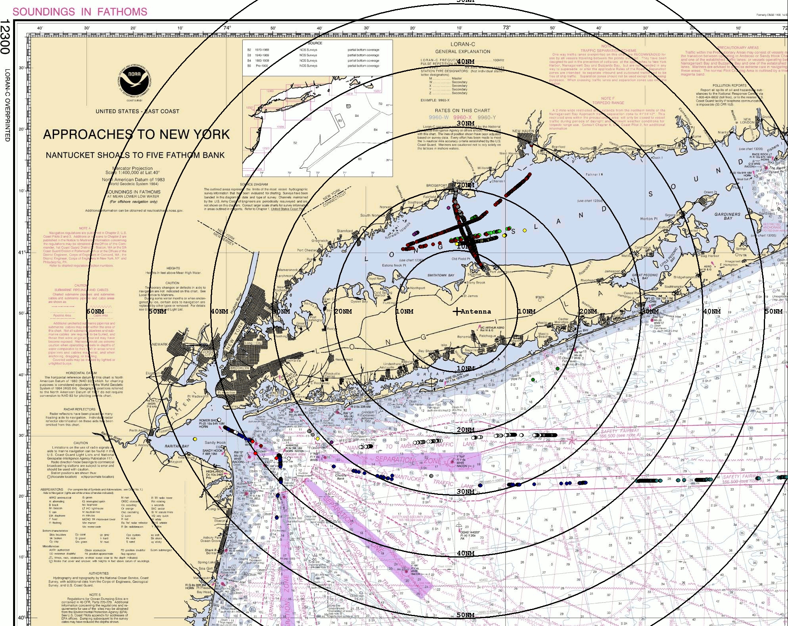
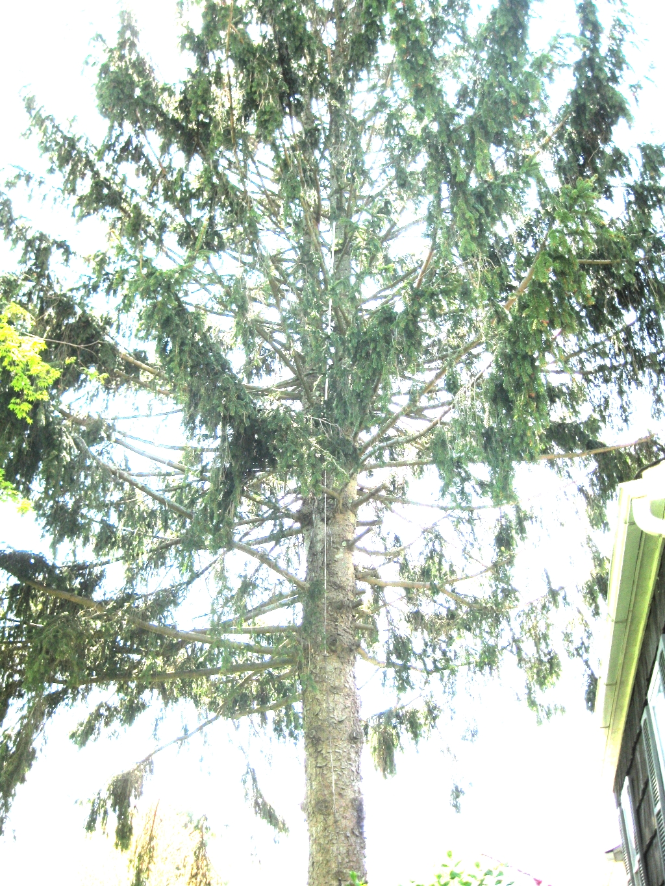
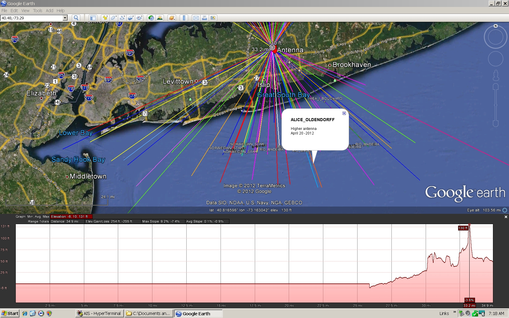
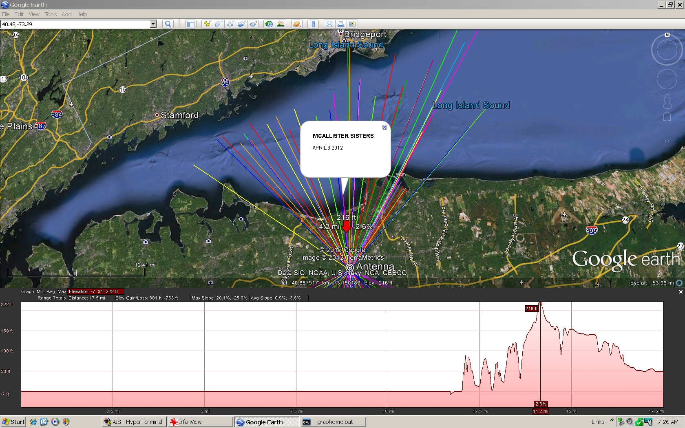

Greg Kunkel's 5 Element Collinear
I am writing this email to describe the performance of a version of
your Mk1 5 element Collinear Antenna.
It is constructed of RG58 coax with a 10 ft RG58 lead.
It is connected with 30ft RG6 coax to a ACR Nauticast AIS
Receiver which is then conneced by USB to my Windows XP computer.
The Antenna is inserted into 10 ft of half inch PVC pipe and is hung
from the branches of a Norway spruce on its north side.
The tree is on the south side of my house which is in the middle of
Long Island NY.
My house is surrounded on the north and south with glacial moraines
averaging 150 ft in altitude.
The bottom of the antenna is 75 ft above sea level.
Frankly I expected very little reception to the south because of the
position of the antenna in the tree but I have seen no evidence that
the tree interferes with the signal.
I have included a photo and some diagrams that demonstrate the
reception.
I have not include some long range receptions of up to 130 miles, that
probably due to unusual atmospheric conditions.
Thank you for your sharing of the plans.
I have written a program in Delphi 5 to plot the AIS positions in real
time on my local charts and on Google Earth.



